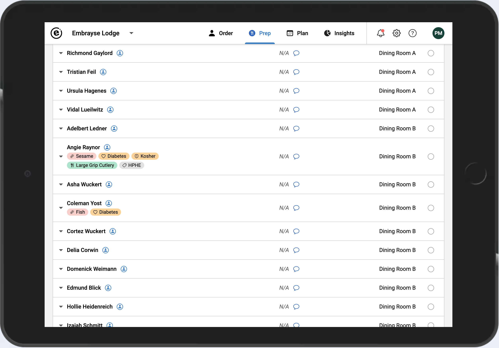
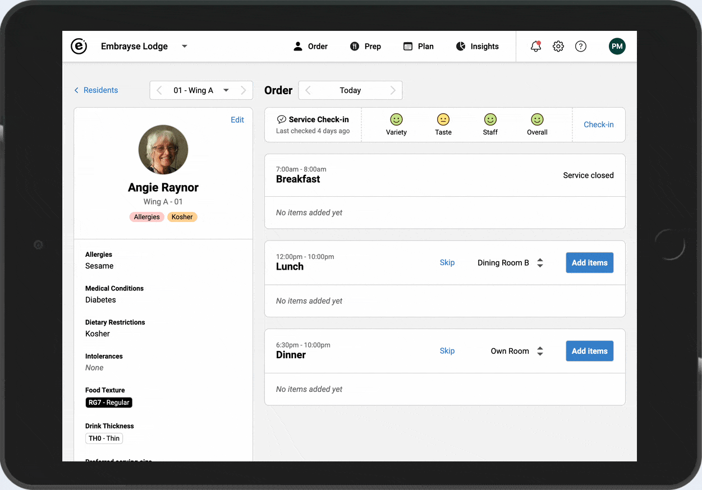
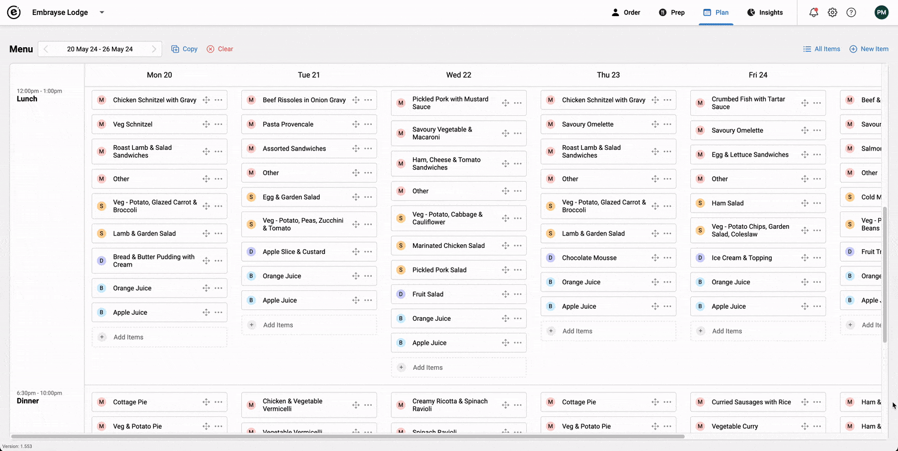

Release 2024.2 – Prep report enhancements, preferred serving size, and duplicating menu items
Here at Embrayse we are always looking for ways to improve your experience with the software, and in turn your residents' dining experience. Our latest set of changes aim to do just that.
Prep Report Enhancements
We have heard you loud and clear: you need to see more details about residents on the prep report. You will now see a series of tags underneath their names which indicate any allergies, medical conditions, diets, utensils, and custom tags relating to them. Each type of tag uses a unique icon and colour to make it easier for you to focus on the right information. Additionally, we have made other small changes to this screen to make it easier to read.

Preferred Serving Size
You can now choose a preferred serving size for each resident, which will automatically be used as a default when a meal is selected for that resident. This will save you time from having to repeatedly select the portion size, for example if the resident prefers small meals. As before, you can still change this serving size on a per-item basis, and this choice is remembered for that particular menu item. For example if Helen enjoys small meals, but would like a medium sized portion of ice cream, this exception is remembered when she chooses ice cream again in the future.

Duplicating Menu Items
Menu items can now be easily duplicated. This makes it a lot quicker for creating variations of the same item, or creating new items that have a lot of common field values.

Other Improvements and Bug Fixes
- Added Ginger as an allergen.
- Added new automated security checks.
- Fixed: TV poster thumbnails don't show correctly in the settings area and require a page refresh.
Want to see Embrayse in action?